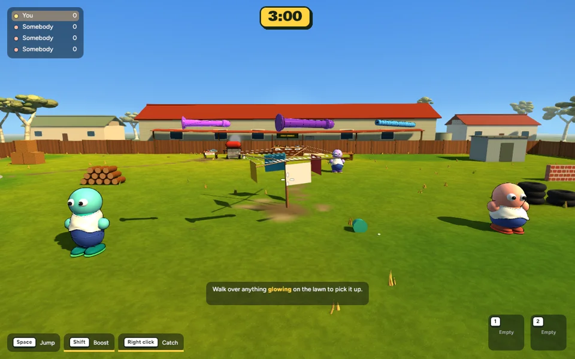

Implemented game captures · 14 October 2026 · Ready for review, uncommitted.
Weightier rubber tumbling, softer noodle impacts, less repeated bouncing and a smoother turn into the resting pose. The cartoon graphics are preserved. Left to right in each capture: classic rubber, jumbo rubber, pool noodle.
The centre item also meets the clothesline obstacle. Initial flight paths are unchanged; contact response and final positions differ.

589 tests passed; one existing ignored test. Release build passed. Settling tested at 30, 60 and 120 Hz, alongside impact energy, walls, water and unchanged ballistic hit checks.
| 11-bot scene | Before | After |
|---|---|---|
| Mean frame time | 7.599 ms | 7.665 ms |
| Mean FPS | 131.60 | 130.46 |
| 95th percentile | 8.508 ms | 8.498 ms |
| Frames over 16.67 ms | 0 / 600 | 0 / 600 |
Single matching runs on this Mac, 1280×800, fixed 60 Hz simulation, 300 warmup frames then 600 wall-clock intervals. Capture runs were excluded. Mean frame time rose 0.9%; no meaningful regression is established by this small difference. Mesh, material and image-memory counts are unchanged.
The game retains its simple hit/catch collider. Tumbling, bend and support-height adjustments are presentation effects, not a full rigid-body or soft-body simulation. This pass does not provide exact mesh collisions or network-synchronised angular motion. Live multiplayer and subjective aiming/catching feel still need playtesting.
Recovery checkpoint · Measured settling times
Please review the feel before any commit, push or next milestone.